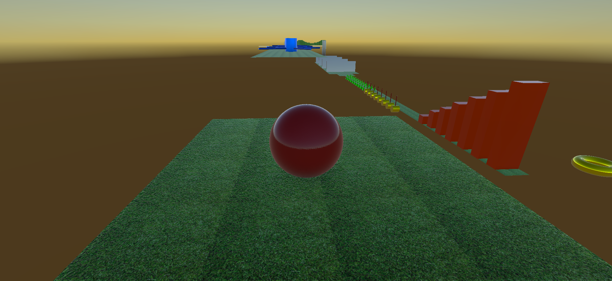
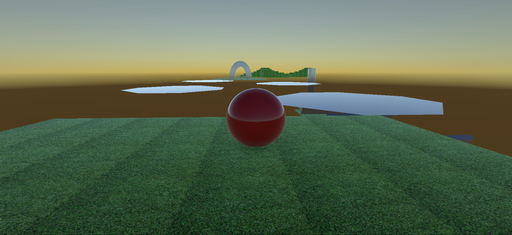
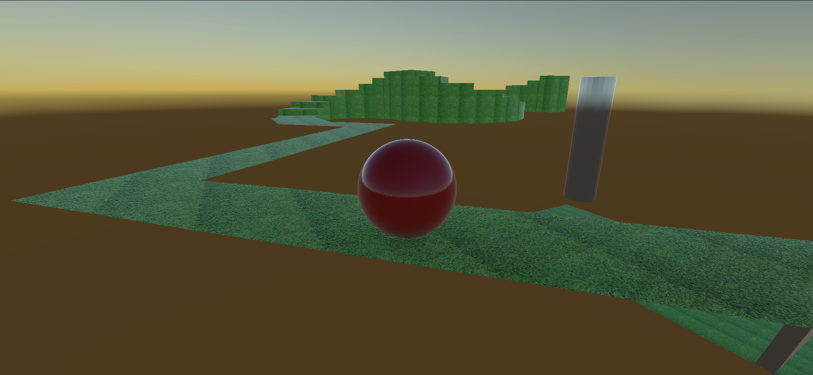
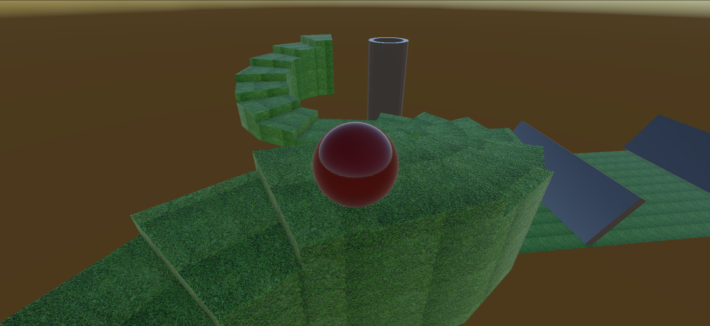
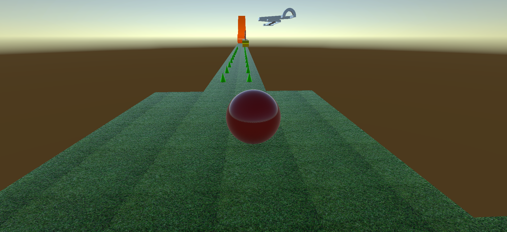

PROYECTO 04
ROLL-A-BALL
Proyecto 3D desarrollado en Unity, enfocado en el movimiento del jugador, física y recorrido por diferentes obstáculos.

Sobre el proyecto
Roll-a-Ball es un proyecto desarrollado en Unity como parte del proceso de aprendizaje en desarrollo de videojuegos 3D.
El objetivo principal fue crear un sistema de movimiento para controlar una esfera, utilizando físicas y diferentes elementos del escenario para construir un recorrido interactivo.
Durante el desarrollo se trabajaron conceptos fundamentales de Unity como el movimiento, colisiones, físicas, cámaras y diseño de niveles.
Tecnologías
Características
Movimiento
Sistema de control para mover la esfera por el escenario.
Física
Uso del sistema de físicas de Unity para controlar el comportamiento de la esfera.
Obstáculos
Diferentes obstáculos y elementos que hacen parte del recorrido del jugador.
Diseño 3D
Creación de un escenario 3D con diferentes zonas y recorridos.
Galería




